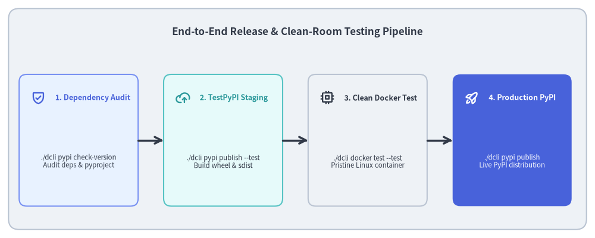
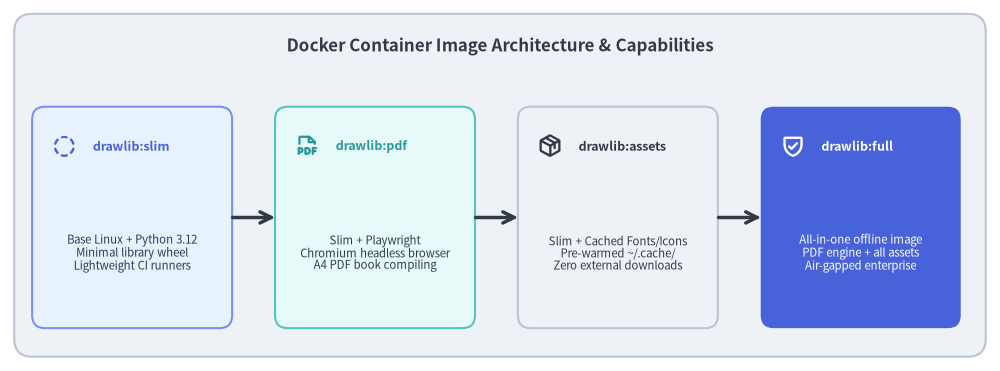

Developer Tooling: Publishing & Clean-Room Testing
Releasing a production library requires rigorous verification to ensure that published packages install cleanly, lack hidden local dependencies, and function in completely isolated environments.

Source Code
from drawlib.canvas import save, setup
from drawlib.icons import phosphor
from drawlib.lines import line
from drawlib.shapes import rectangle
from drawlib.styles import Styles
from drawlib.text import text
setup(width=140, height=56)
rectangle((70, 28), width=136, height=52, style=Styles.Neutral.patch(shape_r=2.5))
text(
(70, 48.5),
"End-to-End Release & Clean-Room Testing Pipeline",
style=Styles.DarkBold.patch(text_size=12.2),
)
stages = [
(18.5, "1. Dependency Audit", "./dcli pypi check-version\nAudit deps & pyproject", phosphor.shield_check, Styles.PrimaryNeutral, Styles.PrimaryBold),
(52.5, "2. TestPyPI Staging", "./dcli pypi publish --test\nBuild wheel & sdist", phosphor.cloud_arrow_up, Styles.SecondaryNeutral, Styles.SecondaryBold),
(86.5, "3. Clean Docker Test", "./dcli docker test --test\nPristine Linux container", phosphor.cpu, Styles.Neutral, Styles.DarkBold),
(120.5, "4. Production PyPI", "./dcli pypi publish\nLive PyPI distribution", phosphor.rocket_launch, Styles.PrimaryFlat, Styles.WhiteBold),
]
for x, title, desc, icon_func, card_style, icon_style in stages:
rectangle((x, 23), width=28, height=31, style=card_style.patch(shape_r=1.8))
icon_func((x - 9.5, 33), width=3.4, style=icon_style)
text((x - 5.5, 33), title, style=icon_style.patch(halign="left", text_size=9.0))
sub_style = Styles.White if card_style == Styles.PrimaryFlat else Styles.Dark
text((x, 18), desc, style=sub_style.patch(text_size=8.2))
for i in range(3):
x_from = stages[i][0] + 14.0
x_to = stages[i + 1][0] - 14.0
line((x_from, 23), (x_to, 23), arrow_head="->", style=Styles.DarkBold)
save()
1. Concept: Clean-Room Release Verification
A notorious failure mode in Python library development is the "works on my machine" release:
- A developer accidentally relies on an uncommitted local file or unpinned global package.
- A package wheel is built and pushed to PyPI without verifying that it can be cleanly installed and run on a stock Linux machine.
- Version tags jump unpredictably (e.g. accidentally releasing
0.3.0instead of0.2.1), breaking semantic version expectations.
Drawlib eliminates these risks through two foundational tooling modules:
pypiToolset (tools/dcli/pypi/): Audits dependency health, enforces monotonic version progression, synchronizesREADME_PYPI.md, and handles authenticated package publishing.dockerToolset (tools/dcli/docker.py): Spawns isolated clean-room Linux containers that download the newly staged package from TestPyPI, install it into a virgin Python virtualenv, and execute the entire test suite.
2. Positioning: The Release and Deployment Boundary
The release tooling acts as the quality firewall between local code repositories and public distribution channels:

Source Code
from drawlib.canvas import save, setup
from drawlib.icons import phosphor
from drawlib.lines import line
from drawlib.shapes import rectangle
from drawlib.styles import Styles
from drawlib.text import text
setup(width=140, height=52)
rectangle((70, 26), width=136, height=48, style=Styles.Neutral.patch(shape_r=2.5))
text(
(70, 45.5),
"Docker Container Image Architecture & Capabilities",
style=Styles.DarkBold.patch(text_size=12.2),
)
variants = [
(18.5, "drawlib:slim", "Base Linux + Python 3.12\nMinimal library wheel\nLightweight CI runners", phosphor.circle_dashed, Styles.PrimaryNeutral, Styles.PrimaryBold),
(52.5, "drawlib:pdf", "Slim + Playwright\nChromium headless browser\nA4 PDF book compiling", phosphor.file_pdf, Styles.SecondaryNeutral, Styles.SecondaryBold),
(86.5, "drawlib:assets", "Slim + Cached Fonts/Icons\nPre-warmed ~/.cache/\nZero external downloads", phosphor.package, Styles.Neutral, Styles.DarkBold),
(120.5, "drawlib:full", "All-in-one offline image\nPDF engine + all assets\nAir-gapped enterprise", phosphor.shield_check, Styles.PrimaryFlat, Styles.WhiteBold),
]
for x, title, desc, icon_func, card_style, icon_style in variants:
rectangle((x, 21.5), width=28, height=31, style=card_style.patch(shape_r=1.8))
icon_func((x - 9.5, 31.5), width=3.4, style=icon_style)
text((x - 5.5, 31.5), title, style=icon_style.patch(halign="left", text_size=9.0))
sub_style = Styles.White if card_style == Styles.PrimaryFlat else Styles.Dark
text((x, 16.5), desc, style=sub_style.patch(text_size=8.2))
for i in range(3):
x_from = variants[i][0] + 14.0
x_to = variants[i + 1][0] - 14.0
line((x_from, 21.5), (x_to, 21.5), arrow_head="->", style=Styles.DarkBold)
save()
3. Details: Tooling Workflows and Docker Architecture
3.1. PyPI Release Workflow (./dcli pypi)
The release sequence follows a strict verification pipeline:
- Dependency Audit (
./dcli pypi deps): Generates the runtime dependency tree, flagging outdated or incompatible transitive dependencies. - Version Progression (
./dcli pypi check-version): Queries PyPI to verify that the version declared inpyproject.tomlis strictly greater than the latest published release and conforms to semantic versioning (preventing accidental minor/major jumps unless explicitly passed--allow-jump). - Metadata Synchronization (
./dcli pypi update-pyproject): Ensures thatREADME_PYPI.md, license files, and project URLs are synchronized intopyproject.toml. - Decoupled Asset Separation: Binary fonts, icons, and maps are intentionally excluded from the wheel distribution to keep package sizes under 2 MB. Instead, their bit-exact SHA-256 hashes are compiled into
src/drawlib/_release_assets.py, and the archives are hosted on GitHub Releases (see Code Generation & Assets). - Staging (
./dcli pypi publish --test-pypi): Builds source distributions (sdist) and binary wheels (bdist_wheel), publishing them to TestPyPI. - Production Publishing (
./dcli pypi publish): After clean-room Docker container verification passes, published packages are deployed to live PyPI.
3.2. Clean-Room Docker Container Testing (./dcli docker test)
Before pushing to production PyPI, ./dcli docker test --test-pypi <VERSION> executes:
- Spawns a clean
debian:bookworm-slimorpython:3.12-slimcontainer with no access to local project files. - Installs
drawlib==<VERSION>directly from TestPyPI. - Runs
pytest tests/drawlib/inside the clean container. - Verifies that all imports, asset caches, and drawing operations succeed without requiring development dependencies.
3.3. Production Container Variants
Drawlib provides 4 container configurations for different operational environments:
drawlib:slim: Standard minimal image for diagram-rendering CLI containers.drawlib:pdf: Includes headless Chromium for automated PDF documentation pipelines.drawlib:assets: Pre-downloads and verifies all 53 font, icon, and map packages (drawlib cache download --all) at build time intodrawlib._cached_assets/, eliminating external network requests during runtime execution.drawlib:full: Combines PDF export and pre-warmed assets for completely air-gapped enterprise deployments.
Next, explore Drawlib's testing architecture and verification methodologies in Test Architecture: Hierarchy & Strategy.